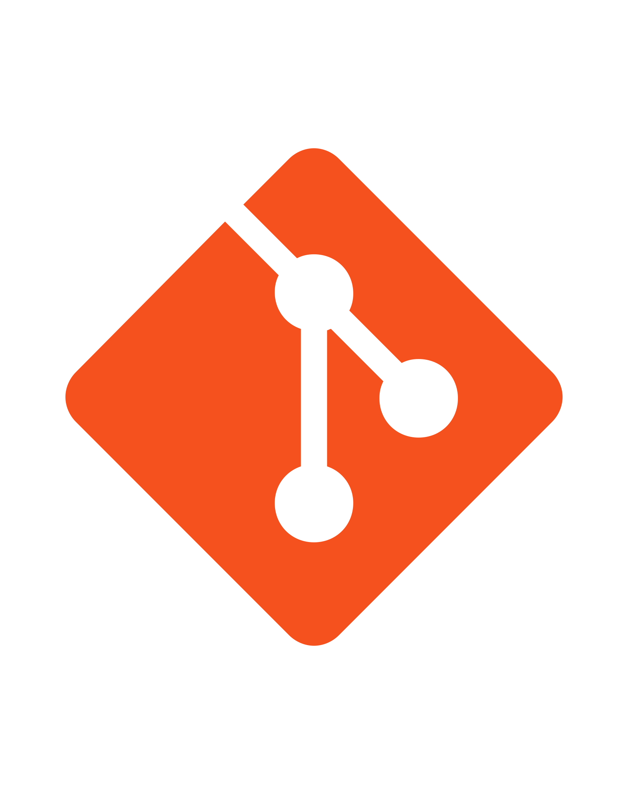
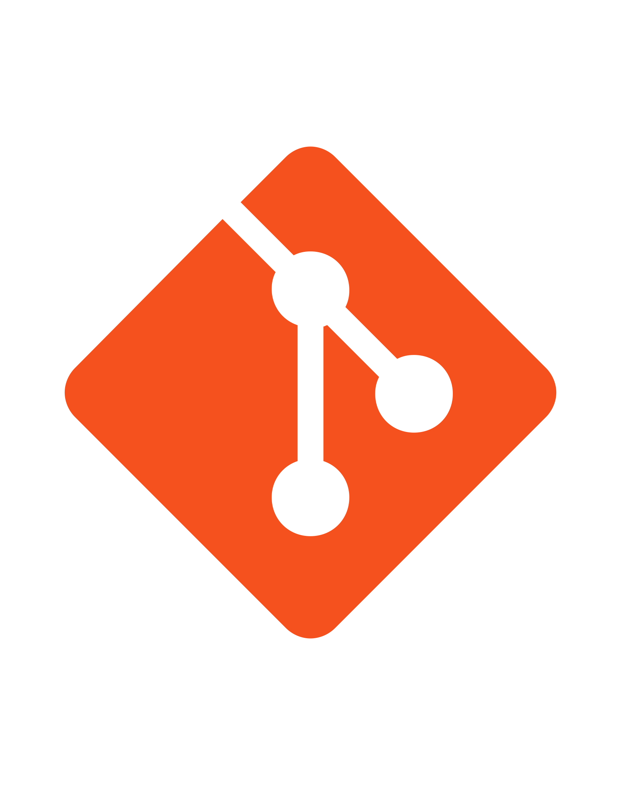
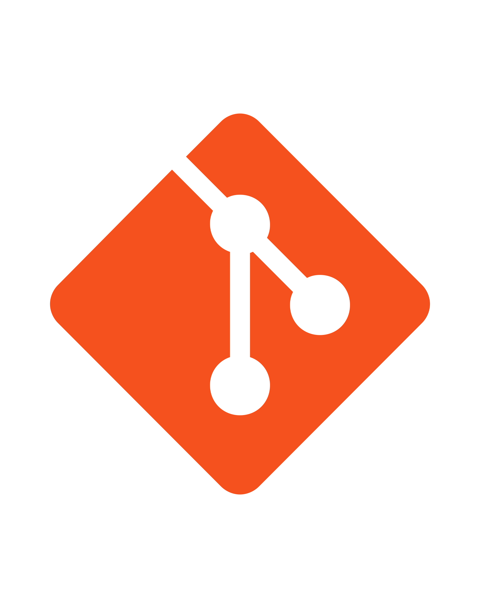

Technologies
I'm familiar with HTML5
 ,CSS3
,CSS3  ,Angular
,Angular  ,Git 
,JavaScript
,Git 
,JavaScript  ,Spring
,Spring  ,ReactJS basics
,ReactJS basics  , and
Web Hosting
, and
Web Hosting 
I have 2 years of working in FileNet domain.
I'm familiar with HTML5
,CSS3
,Angular
,Git 
,JavaScript
,Spring
,ReactJS basics , and
Web Hosting
Projects pushed to github and hosted online
I am also working on some technical and non techincal blogs. I like to document my journey of learning.